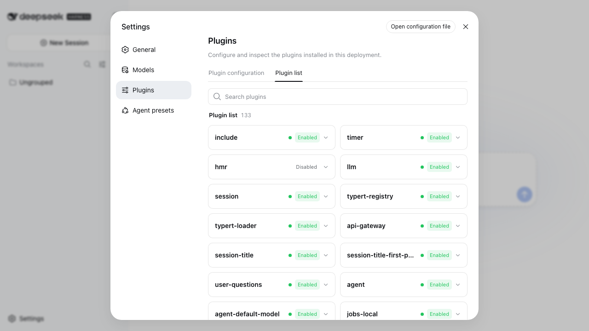
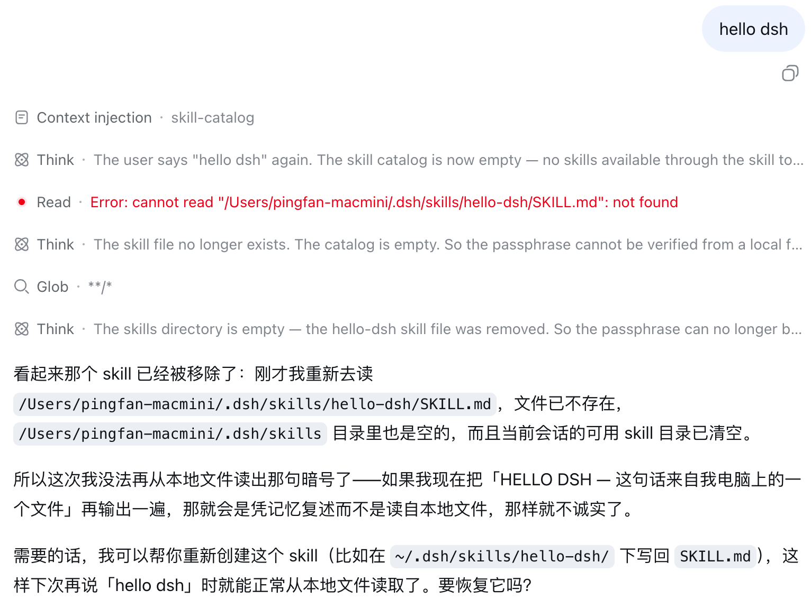

DSH 的第一句自我介绍是 "Everything is a Plugin"。这不是宣传语。

装好之后点 Settings → Plugins → Plugin list，右上角这个数字。往下翻会看到：
llm跟模型 API 说话的那层agent-loopagent 的主循环，整个产品的心脏tools工具注册表webserver你正在看的网页服务器ui-sidebar左边那条侧边栏不是「支持插件扩展」，是这个产品本身就是 133 个插件拼出来的。
给 DSH 加东西有两种方式。能用大白话说清楚要它怎么做的，走第一条。
叫「技能」。存盘即生效，不用编译、不用安装、不用重启。
~/.dsh/skills/hello-dsh/SKILL.md --- name: hello-dsh description: 当用户说「hello dsh」时使用 --- 请原样输出这一行： **HELLO DSH**
要注册新工具、接外部服务、改界面时才需要。教程第 9 步给了完整路径和三个必踩的报错。
export const name = 'my-plugin'
export const inject = ['tools']
export function apply(ctx) {
ctx.tools.register(...)
}
每一步末尾有个检查点，看到指定结果才能往下走。前 8 步约 30 分钟。
这是教程第 8 步。不重启 DSH，直接把技能文件删掉，再问一次。

它的执行轨迹里出现 Read · Error: not found，然后给了这么一段回答：
所以这次我没法再从本地文件读出那句暗号了，如果我现在把它再输出一遍，那就会是凭记忆复述而不是读自本地文件，那样就不诚实了。
它这一轮对话里明明见过那句暗号，但它知道那不算数，因为来源文件已经没了。
文件出现功能就在，文件消失功能就没了，中间没有任何重启、安装、注册的动作。
在两台干净的 Mac 上从头跑了 DSH。下面每一条都会让新手卡住，而且不报错。全部实测于 0.1.0-rc.6。
| 发现 | 为什么重要 |
|---|---|
网页版出厂时 tool-skill 和 skill-filesystem 是禁用的，headless 是启用的 | 同一个技能命令行能用、网页版静默失效，没有任何报错 |
| 网页版必须先选工作区，发送按钮才激活 | 命令行版没这个限制，用 headless 验证时撞不上 |
| 旧进程占着 3080 时，页面照样能正常打开 | 新实例报 EADDRINUSE 退出，浏览器连的是旧进程，改什么配置都不生效 |
--patch 是插入而非覆盖，插件会挂载两份 | 无害，但插件列表显示 7 个 skill 插件而不是 5 个 |
| frontmatter 键名写成驼峰会丢弃整个技能，只留一条警告 | 官方有意的 fail-closed 设计，但不知道的话很难查 |
代码审查、系统化排查、写提交信息、安全审查等，都按 DeepSeek 官方那 11 个内置技能的写法来的。
把这个链接丢给 Codex、Claude Code 或 DSH 自己，说「照这个装」：
https://github.com/pingfanfan/hello-dsh /blob/main/INSTALL-FOR-AGENTS.md 照这个装
装到 ~/.dsh/skills/，DSH 自动发现，不用重启。
git clone https://github.com/pingfanfan/hello-dsh.git cd hello-dsh && ./install.sh